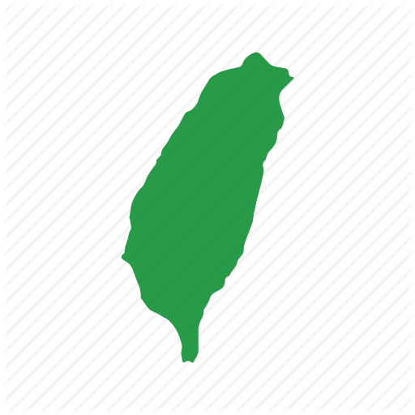

台灣是太平洋中的一個島嶼。今天，這個島上生活著不同的人群，包括福建，客家，其他省份的中國人，台灣原住民和東南亞移民。第二次世界大戰之前，台灣是日本的殖民地。 1895年,由於第一次抗日戰爭失敗,中國將台灣,遼東半島等地賜予日本。第二次世界大戰後,中華民國政府移居台灣，並開始建造該島。中華民國政府在1949年到達台灣時， 也有將近200萬士兵及其家屬也移居台灣。當時中華民國政府到達台灣時,有許多事情需要解決。 1945年第二次世界大戰結束時,台灣的經濟和衛生條件很低。中華民國政府對台灣的發展產生了重大影響， 將經濟實體從農業轉變為高科技產業。
